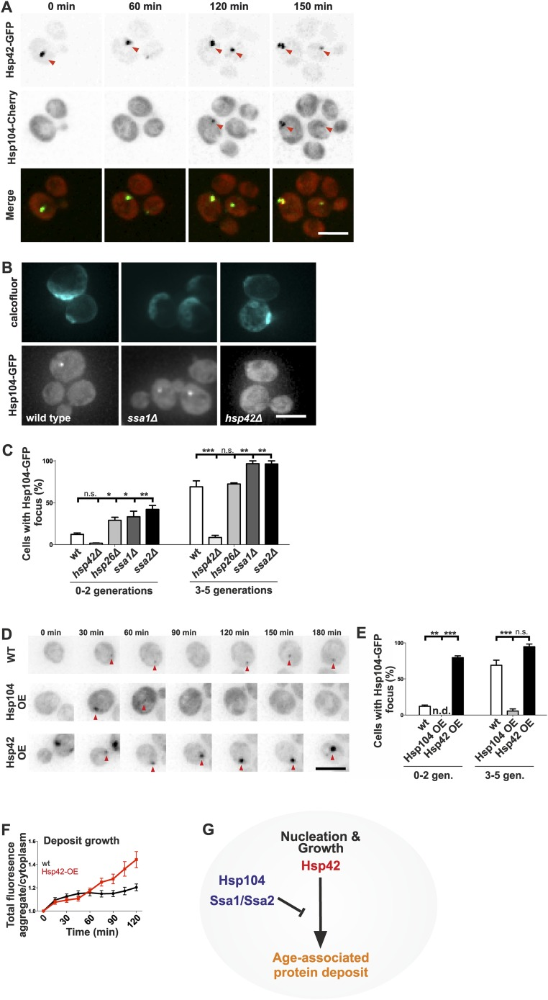

age-associated protein deposit
An aging-associated protein inclusion characterized in budding yeast that collects aggregation-prone proteins, usually persists as a single ER-associated deposit, and is preferentially retained in the mother-cell lineage. [DOI:10.1016/j.cub.2017.01.069]

NCBITaxon:4932) · Juha Saarikangas and Yves Barral (2015), Figure 6; CC BY 4.0, via PubMed Central. Unmodified. · CC_BY_4_0 · source: PMC PMC4635334.1 fig6 · DOI:10.7554/eLife.06197Synonyms: Agepod; APOD; age-associated protein deposit site
Components
| Component | Type | Part of / acts on | Grounding | Genes | Stoichiometry | Essential | Role |
|---|---|---|---|---|---|---|---|
| heterogeneous age-associated protein cargo | Other | part of | Reviewed label only (reviewed name; no accession asserted) | UNKNOWN | Protein material collected into a persistent aging-associated inclusion. The complete native inventory is unresolved; the conditional Sup35 example below is part of this cargo, not an additional fixed layer.
| ||
| Small heat shock protein | Protein | part of | InterPro:IPR031107 | HSP42, HSP26 | CONDITIONAL | Deposited chaperone class represented by Hsp42 and conditionally Hsp26. Hsp42 appears before Hsp104 and promotes collection into the normal deposit. Hsp26 enrichment occurs in only 15% of assayed deposits; its deletion does not abolish deposition. The formation requirement applies to Hsp42 in the tested assay, not to every family member.
| |
| Hsp104-type disaggregase | Protein | acts on | Reviewed label only (reviewed name; no accession asserted) | HSP104 | DISPENSABLE | Deposit-associated disaggregase and experimental marker. HSP104 deletion accelerates Ssa1-marked deposit formation, while overexpression suppresses or destabilizes deposits. Hsp104 positivity alone does not identify every focus as Agepod.
| |
| Heat shock protein 70 family | Protein | acts on | InterPro:IPR013126 | SSA1, SSA2 | UNKNOWN | Associated chaperone family represented by Ssa1 and Ssa2. Each single deletion accelerates Hsp104-focus accumulation; this does not establish dispensability of the whole family or a combined-deletion phenotype.
| |
| Ydj1-type Hsp40 cochaperone | Protein | acts on | Reviewed label only (reviewed name; no accession asserted) | YDJ1 | UNKNOWN | Conditionally deposit-enriched cochaperone, not a universal deposit coat. Farnesylatable N-terminal GFP-Ydj1 is enriched in only 9.4% of Hsp104 deposits. Its better-supported upstream role in precursor confinement does not establish that it tethers the assembled deposit.
| |
| Eukaryotic peptide chain release factor GTP-binding subunit | Protein | part of | InterPro:IPR003285 | SUP35 | UNKNOWN | Conditional cargo represented by prion-converted Sup35, enriched in approximately one third of assayed deposits in [PSI+] cells but not in the tested [psi-] cells. This is a subset of heterogeneous cargo, not a universal component or proof that Sup35 prions initiate the structure.
|
Organism-specific protein examples
Named proteins in which each component's role was established, with the organism the evidence comes from. The component above is the taxon-agnostic family; these are the specific entries behind it.
Small heat shock protein
| Accession | Protein | Gene | Organism | Entry |
|---|---|---|---|---|
UniProtKB:Q12329 | Heat shock protein 42 | HSP42 | Saccharomyces cerevisiae S288C (NCBITaxon:559292) | REVIEWED |
Role and evidence (2 references)Reviewed reference-sequence example; not a reassignment of all experimental backgrounds to S288C. Figures 1C and 6 show deposit association, earlier Hsp42 recruitment and suppressed normal deposition after HSP42 deletion.
| ||||
UniProtKB:P15992 | Heat shock protein 26 | HSP26 | Saccharomyces cerevisiae S288C (NCBITaxon:559292) | REVIEWED |
Role and evidence (2 references)Reviewed reference-sequence example; not a reassignment of all experimental backgrounds to S288C. Figure 1C reports enrichment in a minority of deposits; inspected Figure 6C shows increased, not abolished, foci after HSP26 deletion.
| ||||
Hsp104-type disaggregase
| Accession | Protein | Gene | Organism | Entry |
|---|---|---|---|---|
UniProtKB:P31539 | Heat shock protein 104 | HSP104 | Saccharomyces cerevisiae S288C (NCBITaxon:559292) | REVIEWED |
Role and evidence (2 references)Reviewed reference-sequence example; not a reassignment of all experimental backgrounds to S288C. Figures 1, 6 and 7 establish association and show that the structure can form without Hsp104.
| ||||
Heat shock protein 70 family
| Accession | Protein | Gene | Organism | Entry |
|---|---|---|---|---|
UniProtKB:P10591 | Heat shock protein SSA1 | SSA1 | Saccharomyces cerevisiae S288C (NCBITaxon:559292) | REVIEWED |
Role and evidence (2 references)Reviewed reference-sequence example; not a reassignment of all experimental backgrounds to S288C. Figure 1C supports deposit association; Figure 6C labels a separate ssa1 deletion group.
| ||||
UniProtKB:P10592 | Heat shock protein SSA2 | SSA2 | Saccharomyces cerevisiae S288C (NCBITaxon:559292) | REVIEWED |
Role and evidence (2 references)Reviewed reference-sequence example; not a reassignment of all experimental backgrounds to S288C. Figure 1C supports deposit association; Figure 6C labels a separate ssa2 deletion group.
| ||||
Ydj1-type Hsp40 cochaperone
| Accession | Protein | Gene | Organism | Entry |
|---|---|---|---|---|
UniProtKB:P25491 | Mitochondrial protein import protein MAS5 | YDJ1 | Saccharomyces cerevisiae S288C (NCBITaxon:559292) | REVIEWED |
Role and evidence (2 references)Reviewed reference-sequence example; not a reassignment of all experimental backgrounds to S288C. Inspected Supplemental Figure S5A shows conditional enrichment of N-terminal GFP-Ydj1. The native UniProt recommended name is retained without implying a mitochondrial location for Agepod.
| ||||
Eukaryotic peptide chain release factor GTP-binding subunit
| Accession | Protein | Gene | Organism | Entry |
|---|---|---|---|---|
UniProtKB:P05453 | Eukaryotic peptide chain release factor GTP-binding subunit | SUP35 | Saccharomyces cerevisiae S288C (NCBITaxon:559292) | REVIEWED |
Role and evidence (2 references)Reviewed reference-sequence example; not a reassignment of all experimental backgrounds to S288C. Figure 2 distinguishes [PSI+] cargo recruitment from the absence of enrichment in the non-prion state.
| ||||
Canonical examples
NCBITaxon:4932Saccharomyces cerevisiae — Species-level experimental scope for localization, inheritance and precursor-confinement assays. The accepted manuscript includes a strain/genotype table; no finer strain identity is inferred from genotype resemblance. [DOI:10.1016/j.cub.2017.01.069]NCBITaxon:559292Saccharomyces cerevisiae S288C — Figure 1 supplement 2 explicitly describes S288C-background deposition, alongside W303 experiments. This is also the native reference taxon for the reviewed protein examples; not every assay or hosted panel is reassigned to it. [DOI:10.7554/eLife.06197]NCBITaxon:1247190Saccharomyces cerevisiae BY4741 — Methods identifies BY4741 derivatives for the mTOR study. Its aging Hsp104-focus readout is operational and does not independently resolve every focus against INQ or other deposits. Native NCBI taxonomy verifies the strain ID. [DOI:10.1016/j.jbc.2025.108172]
Functions
- collection of aggregation-prone protein material — Concentrates selected protein cargo into an aging-associated deposit, typically one persistent focus after initial formation. This is not an exhaustive cargo inventory or proof of a fixed material state.
DOI:10.7554/eLife.06197Figures 1-2 and 6-7 support persistent collection and chaperone-dependent organization.
- asymmetric retention of deposited protein material — Preferentially retains assembled deposits in mother cells during division. Retention of the visible deposit and confinement of its proposed smaller precursors are distinct mechanisms.
DOI:10.7554/eLife.06197Figures 1F and 2G measure mother retention of Hsp104- and Sup35-marked deposits.DOI:10.1016/j.cub.2017.01.069Figures 3-4 distinguish mature-deposit passage from new deposit formation in daughters.
Mechanism graphs
Chaperone-dependent deposition and deposit merger (ASSEMBLY)
| Subject | Predicate | Object | Evidence |
|---|---|---|---|
| HSP42 deletion | suppresses | age-associated protein deposit |
|
| HSP104 deletion | accelerates formation of | age-associated protein deposit |
|
| Hsp42 overexpression | promotes formation of | age-associated protein deposit |
|
| Hsp104 overexpression | suppresses accumulation of | age-associated protein deposit |
|
| SSA1 deletion | accelerates accumulation of | age-associated protein deposit |
|
| SSA2 deletion | accelerates accumulation of | age-associated protein deposit |
|
| age-associated protein deposit | can undergo | Merger of pre-existing deposits after mating |
|
| PRM3 deletion in both mating partners | impairs | Merger of pre-existing deposits after mating |
|
Deposit appearance in daughters versus mature-deposit retention (FUNCTION)
| Subject | Predicate | Object | Evidence |
|---|---|---|---|
| BUD1 deletion | increases | New stable deposit formation in daughter cells |
|
| SUR2 deletion | increases | New stable deposit formation in daughter cells |
|
| BUD6 deletion | increases | New stable deposit formation in daughter cells |
|
| YDJ1-C406S farnesylation-site mutation | increases | New stable deposit formation in daughter cells |
|
| YDJ1-C406S farnesylation-site mutation | does not detectably impair | Mother retention of pre-existing deposits |
|
mTOR-pathway perturbations of aging-associated foci (REGULATION)
| Subject | Predicate | Object | Evidence |
|---|---|---|---|
| NPR3 deletion | increases and advances | Hsp104 foci during replicative aging |
|
| TCO89 deletion | reduces | Hsp104 foci during replicative aging |
|
Age-dependent persistence under aggregation-modifying treatments (DISASSEMBLY)
| Subject | Predicate | Object | Evidence |
|---|---|---|---|
| Rapamycin treatment of younger cells | reduces | Younger-cell Hsp104 foci |
|
| Cycloheximide treatment of younger cells | reduces | Younger-cell Hsp104 foci |
|
| Rapamycin treatment of older cells | does not clear | Older-cell persistent Hsp104 deposits |
|
Discussions
- INTERPRETATION (RESOLVED): Keep the aging-defined deposit distinct without imposing a universal compartment topology. Shared markers and perinuclear proximity do not establish exact identity.
- CURATION_TODO (OPEN): Resolve exact source-neutral groundings for heterogeneous cargo and narrow Hsp104/Ydj1 classes. Broader chaperone families and variable client inventories are not exact identities.
- INTERPRETATION (RESOLVED): Separate conditional Ydj1 residence from the proposed precursor-confinement mechanism. Fluorescent tag placement changes farnesylation and exchange; diffusion is not direct client identification.
- INTERPRETATION (RESOLVED): Do not convert upstream factors, marker negatives or lifespan correlations into composition and universal function. Localization, genetic dependence and pleiotropic phenotypes answer different questions.
- INTERPRETATION (RESOLVED): Preserve single-deletion, tag, dose and assay-context distinctions. A source inconsistency or readout boundary must not be flattened into a stronger claim.
- CURATION_TODO (OPEN): Resolve complete native cargo, material state, prevalence and the relationship to nuclear inclusions. A few yeast backgrounds and fluorescence assays do not establish fixed composition, dimensions or lineage-wide presence.
Evidence
DOI:10.7554/eLife.06197Saarikangas and Barral (2015), PMID 26544680, PMC4635334.1. Native current metadata/JATS verified, not retracted. Read main Results, Discussion, Methods and figure captions; inspected Figure 6. The supplemental strain workbook, videos and raw data were not inspected.DOI:10.1016/j.cub.2017.01.069Saarikangas et al. (2017), PMID 28262489. Read the institutional accepted-manuscript PDF including main Results, Discussion, Methods, figure legends and supplemental strain/procedure text. Inspected main Figures 1, 3, 4 and Supplemental Figures S1 and S5. Raw data and movie were not inspected; no reuse licence is inferred for this PDF.DOI:10.1016/j.jbc.2025.1081722025 mTOR study, PMID 39798875, PMC11849620.1. Native current metadata/JATS verified, not retracted. Read main Results, aging methods and Data availability; captions inspected but figure pixels and supplemental datasets not independently inspected.DOI:10.3389/fnmol.2018.002492018 spatial protein-quality-control review, PMID 30083092, PMC6064742.1. Native metadata and Figure 1 caption verified for APOD and expanded-name synonyms only; not used as primary mechanistic evidence.GO:0016234Native QuickGO verifies active inclusion body as a broader cellular-component parent.
Curation history
2026-10-05T10:03:31Zcodex · CREATED_RECORD — Scaffolded by scripts/new_record.py2026-10-05T10:06:34Zcodex · EXPANDED_RECORD — Added bounded Agepod identity and topology, six component classes, seven reference proteins, four intervention graphs, source-limit discussions and an inspected CC BY 4.0 figure.
Source: data/structures/inclusion/age_associated_protein_deposit.yaml